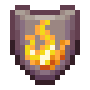
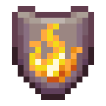

Всі механіки із зіллями відбуваються у варильній стійці
Для всіх зілля основою є "незграбне" зілля, окрім зілля слабкості для якого основа це звичайна пляшка з водою
Щоб покращити рівень зілля в Minecraft використовуйте світляний пил (світловідня) для збільшення сили ефекту, додаючи їх до готового базового зілля. Збільшення рівня зілля робить його сильнішим
А для того щоб подовжити рівень зілля в Minecraft, використовуйте редстоун для збільшення тривалості ефекту, але редстоун робить робить нижчим рівень зілля
Також в ігрі існує взривне зілля. Для того щоб його зробити вам потрібно додати порох до звичайного зілля
Самий непопулярний тип зілля є "туманним". Для його крафту треба додати зілля драконячого дихання


Зілля відновлення
БазаМоторошне зілля
Ефект:Відновлює 18/36
 )
)Тривалість3:00/8:00

Зілля швидкості
БазаМоторошне зілля
Ефект:Збільшує швидкість і дальність стрибка на 20%/40%, а також збільшує поле зору (спринт зі швидкістю 6,6/8 метра за секунду).
Тривалість3:00/8:00
 

Зілля вогнестійкості
БазаМоторошне зілля
Ефект:Надає імунітет до всіх пошкоджень, пов'язаних з нагріванням.
Тривалість3:00/8:00


Зілля сцілення
БазаМоторошне зілля
Ефект:Відновлює 4/8 одиниць здоров'я (подвоюється з кожним додатковим рівнем)./)
ТривалістьМиттєво

Зілля нічного бачення
БазаМоторошне зілля
Ефект:Візуально освітлює все до рівня освітлення 15, освітлює воду блакитним блиском, освітлює лаву помаранчевим блиском (інші гравці не бачать посиленого освітлення без цього ефекту).
Тривалість3:00/8:00


Зілля сили
БазаМоторошне зілля
Ефект:Збільшує шкоду ближнього бою на 3. [ Тільки Java Edition ] Збільшує шкоду ближнього бою на 30% від базової шкоди та 1. [ Тільки Bedrock Edition ]
 )
)Тривалість3:00/8:00


Зілля стрибучості
БазаМоторошне зілля
Ефект:Дозволяє гравцеві стрибати на 1 ⁄ 2/до 2 1 / 2 блоки вище та зменшує шкоду/ще більше від падіння.
Тривалість3:00/8:00


Зілля водного дихання
БазаМоторошне зілля
Ефект:Дозволяє сутності плавати, не тонучи та не потребуючи спливання на поверхню для дихання. Киснева шкала не зменшується під водою.
Тривалість3:00/8:00


Зілля невидимості
БазаМоторошне зілля
Ефект:Змушує гравця зникнути з поля зору. Моби можуть виявляти та відстежувати гравця лише на близькій відстані, хоча дальність збільшується, коли гравець одягає броню. Версія сплеш робить мобів або інших гравців невидимими. Деякі предмети залишаються видимими.
Тривалість3:00/8:00


Зілля повільного падіння
БазаМоторошне зілля
Ефект:Моб/гравець падає набагато повільніше, а шкода від удару об землю зводиться до нуля. Стає можливим стрибок майже на 6 блоків, а сільськогосподарські угіддя не зазнають впливу від падіння гравця на них.
Тривалість3:00/8:00


Зілля отруєння
БазаМоторошне зілля
Ефект:Завдає до 36/72 18/36) [ лише JE ] або 96 48) [ лише BE ] одиниць шкоди з часом, але не знижує здоров'я нижче 1
Тривалість0:45/1:30


Зілля слабкості
Базапляшка з водою
Ефект:Зменшує шкоду в ближньому бою на 4. [ Тільки Java Edition ] Зменшує шкоду в ближньому бою на 20% від базової шкоди та 0,5 × 0,25. [ Тільки Bedrock Edition ]
) ()Тривалість1:30/4:00


Зілля заповільнення
Зілля повільного падіння
БазаМоторошне зілля
Ефект:Уповільнює гравців та мобів на 15%/60%, приблизно до 4,75/2,25 блоків за секунду під час спринту.
Тривалість1:30/4:00


Зілля шкоди
Зілля отруєння
БазаМоторошне зілля
Ефект:Пошкодження 6/12 (подвоюється з кожним наступним рівнем). 3/6)
ТривалістьМиттєво


Зілля зараження
БазаМоторошне зілля
Ефект:Якщо моб має ефект Зараження, він має 10% шанс породити 1–3 чешуйниць , коли отримує травму. Кількість та шанс появи чешуйниць не залежать від рівня сили зілля.
Тривалість3:00


Зілля сочання
БазаМоторошне зілля
Ефект:Якщо моб має ефект "Сочіння", то після смерті він породжує двох слизняків середнього розміру . Кількість та розмір слизняків, що з'являються, не залежать від рівня сили зілля
Тривалість3:00


Зілля плетіння
БазаМоторошне зілля
Ефект:Якщо моб має ефект Плетіння, вплив павутиння на його швидкість зменшується, і він створює 2–3 павутини після смерті. Кількість павутини не залежить від рівня сили зілля.
Тривалість3:00


Зілля вітряного заряду
БазаМоторошне зілля
Ефект:Якщо моб має ефект «Заряд вітру», то після смерті він генерує вибух вітру, подібний до того, що створюється зарядами вітру . Інтенсивність цього вибуху не залежить від рівня сили зілля.
Тривалість3:00


Зілля майстра черепах
БазаМоторошне зілля
Ефект:Уповільнює гравців та мобів на 60%/90%, приблизно до 2,25/0,5625 блоків за секунду під час спринту, та зменшує отриману ними шкоду на 60%/80%.
Тривалість3:00